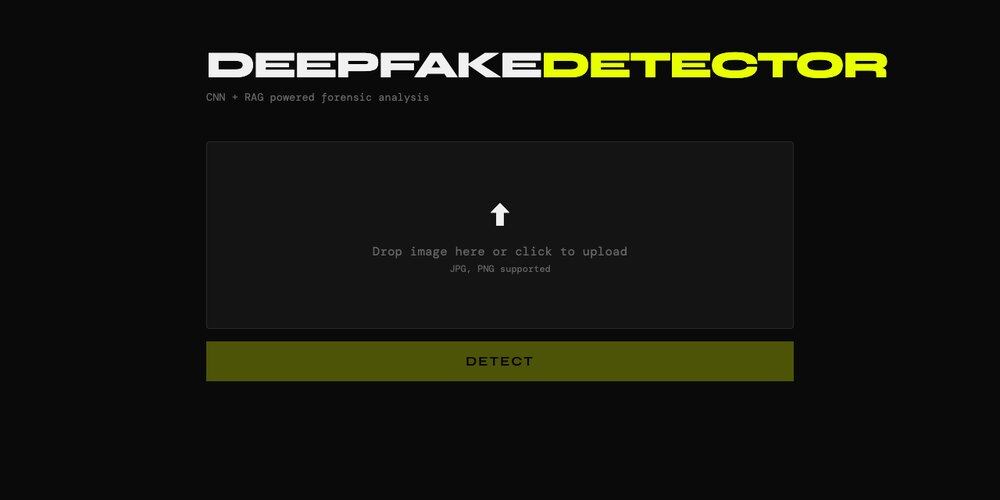

Hi, I'm Ramadhan.
I'm doing my master's in AI and machine learning at PAUSTI in Nairobi, and until January I'm in Hiroshima, working with Assoc. Prof. Junjun Zheng in his Dependable Systems Laboratory.
My thesis is about malware detection that admits when it doesn't know. Most classifiers will call a brand-new malware family by the name of one they've already seen. I'm building one that reads a Windows executable the way the PE format lays it out, says "I haven't seen this before", and then learns the new family from a handful of examples.

What I work onmy thesis, and one project on the side
Open-world malware detection
Open-World Windows Malware Detection with PE-Aware Hierarchical Embeddings and Few-Shot Adaptation
A malware classifier gives every new family the name of an old one. I'm building detection that can also say "unknown", then learn the new family from a few examples.
The encoder reads a Windows program region by region, the way the PE format lays it out: header, sections, overlay, with a learned bias that lets it compare sections by type, entropy and size. I pretrained it without labels on the 9.9 million binaries of SOREL-20M (208K steps, 140 A100-hours). Each known family is described by several prototypes, and a file far from all of them is rejected.
The unglamorous part was getting 9.9 million binaries out of S3 without crashes eating a week of the schedule. I'll write the results up in the thesis and show them in the talk on 17 October.
With Dr. Albert Njoroge Kahira and Dr. Mulang' Onando at PAUSTI, and Assoc. Prof. Junjun Zheng at Hiroshima University.
Federated intrusion detection for vehicles (in progress)
GraMa reads in-vehicle CAN traffic as a graph of message IDs with graph attention, follows it over time with a Mamba model, and trains across vehicles without sharing their data. The server clusters the vehicles' updates with HDBSCAN to keep poisoned ones out. Code.
Things I've builtmostly to understand something
Explainable deepfake detection
An Xception classifier trained on 140K real and GAN faces (about 97% on 20K held-out images) that explains each verdict by retrieving passages from the deepfake-forensics literature.
PyTorch, FAISS, FastAPI, React

raw-pe
A working 2,560-byte Win64 executable, hand-assembled in NASM. Every header and import entry written by hand, no linker. I wanted to know what the Windows loader actually asks for.
sco-pe
A PE parser in C with bounds checks for malformed files: headers, sections, imports, exports and overlays. The other side of raw-pe.
Swahili GPT
A character-level GPT trained from scratch on 65M characters of Swahili news (29,544 articles), a small study of language modelling for a low-resource African language.
Phish-Transformer
A 45K-parameter character-level transformer for phishing URLs (test AUC about 0.98), served to a Chrome extension that warns you before you click.
ML on Kubernetes
A prediction API deployed to GKE through GitHub Actions CI/CD, with a PostgreSQL StatefulSet for prediction logs, SOPS-encrypted secrets, and Prometheus, Grafana and Loki monitoring.
Where I've beenwork and study, newest first
GPU pilot for PAUSTI
Student evaluator, Kinesis Network A100 pilot
Benchmarked training and inference with a custom language-model workload and wrote the decision report on performance, reliability and data persistence.
Hiroshima University
Dependable Systems Laboratory, Higashi-Hiroshima
Special research student on an exchange, hosted by Assoc. Prof. Junjun Zheng. Pretraining the byte encoder on SOREL-20M with the lab's GPUs, testing open-set rejection on BODMAS, and presenting the work at the Chugoku-section conference.
PAUSTI, Pan African University
M.Sc. Artificial Intelligence and Machine Learning, Nairobi
On a Pan African University scholarship from the African Union. Thesis supervised by Dr. Albert Njoroge Kahira and Dr. Mulang' Onando.
Innovative Toll Solutions
Data Analyst and Cybersecurity Associate, Nairobi
Modelling and reporting on operational logs and transaction data. Log-level anomaly detection, alert triage and traffic-pattern analysis, and resilience work after DDoS incidents.
Kenyatta University
B.Sc. Statistics and Programming, Nairobi
First Class Honours, on a county government scholarship.
Things I've writtenabout PE files, GPU memory and transformers
- Sep 2026GPU DRAM Architecture, Explained Simply
- Aug 2026RWX Memory in Windows: What Read, Write, and Execute Really Mean
- Jul 2026I Wrote a Windows PE File From Scratch, in Assembly
Everything I've written, including reading notes.
A bit more
I like going down the stack. I wrote a Windows .exe byte by byte to understand the loader, and I write about how GPU memory fails: Rowhammer, side-channel and fault attacks. Further out, I care about keeping a model's weights and inputs from leaking.
- Languages
- Python, C, SQL, Bash, x86-64 assembly (NASM), JavaScript
- ML
- PyTorch, TensorFlow, scikit-learn, Hugging Face, FAISS, HDBSCAN, contrastive and self-supervised learning
- Systems
- Docker, Kubernetes, Helm, GitHub Actions, GKE, FastAPI, PostgreSQL, Prometheus, Grafana, Linux
- Security
- PE format, static and dynamic malware analysis, reverse engineering, REMnux, FLARE-VM
- First Class Honours, B.Sc. Statistics and Programming, Kenyatta University, 2023
- Pan African University scholarship (African Union), M.Sc. at PAUSTI, 2025–2027
- County government scholarship, Kenya, for secondary school and for the B.Sc., 2019–2023
Say hi.
ramadhanzome4@gmail.comOr k260152@hiroshima-u.ac.jp while I'm at Hiroshima University. I'm in Higashi-Hiroshima until January 2027, then back in Nairobi.